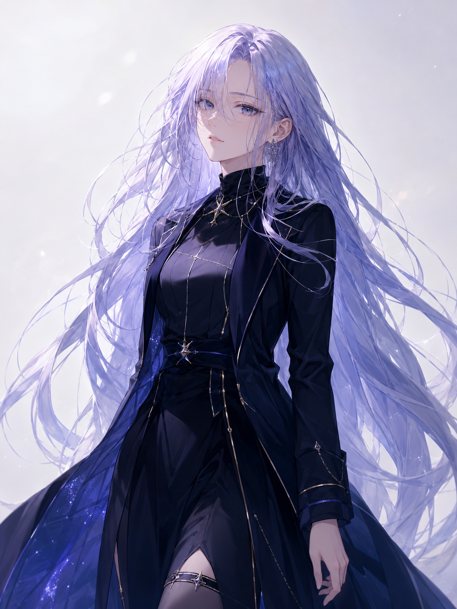

ASTREA / MUSIC LABEL
心の熱を、星の音へ。
AIと人が共創する、音楽と世界観構築プロジェクト。
キャラクター、楽曲、都市、IF世界をひとつの星図として編んでいく。
01
About ASTREA
ASTREAは、音楽・キャラクター・世界観を横断して展開する創作プロジェクトです。 月島レイ、明乃ソレイユ、木乃瀬ミオを中心に、静かな熱、朝の光、木漏れ日の温度を それぞれの歌と物語として描いていきます。
02
Artists
03
Music
04
IF World
ANOTHER POSSIBILITY
もうひとつの星が照らす世界へ。
IF世界では、キャラクターの別の姿、選択から分岐したストーリー、 そして都市・術式・太陽のかけらなどの設定資料を整理していきます。
IF世界の姿
各キャラクターのIF世界での立場、衣装、役割を掲載。
ストーリー
分岐した世界で、彼女たちが何を選び、何を守るのかを整理。
設定資料
都市、太陽のかけら、AIパートナー、術式などの資料置き場。
05
Character Detail
ASTREA / 1st Artist
月島レイ
Rei Tsukishima
夜の中でも歩き出す人を静かに支える存在。冷たく澄んだ声の奥に、 ほどけない熱と、前へ進むための意志を宿している。